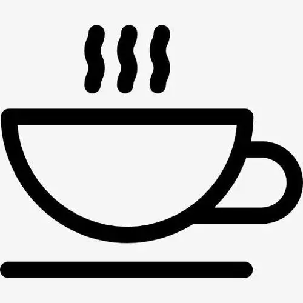

 来杯咖啡吗?
| 咖啡 | 价格 |
|---|---|
| 拿铁 | ¥24 |
| 美式咖啡 | ¥24 |
| 卡布奇诺 | ¥27 |
| 焦糖玛奇朵 | ¥24 |
拿铁咖啡需要一小杯意大利浓缩咖啡和一杯牛奶，拿铁咖啡中牛奶多而咖啡少。拿铁咖啡做法极其简单，就是在刚刚做好的意大利浓缩咖啡中倒入接近沸腾的牛奶。一般的拿铁咖啡的成分是三分之一的意式浓缩咖啡Espresso加三分之二的蒸鲜奶，一般不加入奶泡。它与卡布奇诺Cappuccino相比，有更多鲜奶味道。发展2019年，事实上，加入多少牛奶没有一定的规定，可依个人口味自由调配
拿铁咖啡需要一小杯意大利浓缩咖啡和一杯牛奶，拿铁咖啡中牛奶多而咖啡少。拿铁咖啡做法极其简单，就是在刚刚做好的意大利浓缩咖啡中倒入接近沸腾的牛奶。一般的拿铁咖啡的成分是三分之一的意式浓缩咖啡Espresso加三分之二的蒸鲜奶，一般不加入奶泡。它与卡布奇诺Cappuccino相比，有更多鲜奶味道。发展2019年，事实上，加入多少牛奶没有一定的规定，可依个人口味自由调配
拿铁咖啡需要一小杯意大利浓缩咖啡和一杯牛奶，拿铁咖啡中牛奶多而咖啡少。拿铁咖啡做法极其简单，就是在刚刚做好的意大利浓缩咖啡中倒入接近沸腾的牛奶。一般的拿铁咖啡的成分是三分之一的意式浓缩咖啡Espresso加三分之二的蒸鲜奶，一般不加入奶泡。它与卡布奇诺Cappuccino相比，有更多鲜奶味道。发展2019年，事实上，加入多少牛奶没有一定的规定，可依个人口味自由调配
拿铁咖啡需要一小杯意大利浓缩咖啡和一杯牛奶，拿铁咖啡中牛奶多而咖啡少。拿铁咖啡做法极其简单，就是在刚刚做好的意大利浓缩咖啡中倒入接近沸腾的牛奶。一般的拿铁咖啡的成分是三分之一的意式浓缩咖啡Espresso加三分之二的蒸鲜奶，一般不加入奶泡。它与卡布奇诺Cappuccino相比，有更多鲜奶味道。发展2019年，事实上，加入多少牛奶没有一定的规定，可依个人口味自由调配